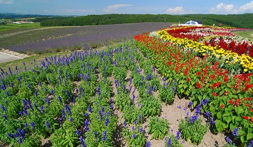
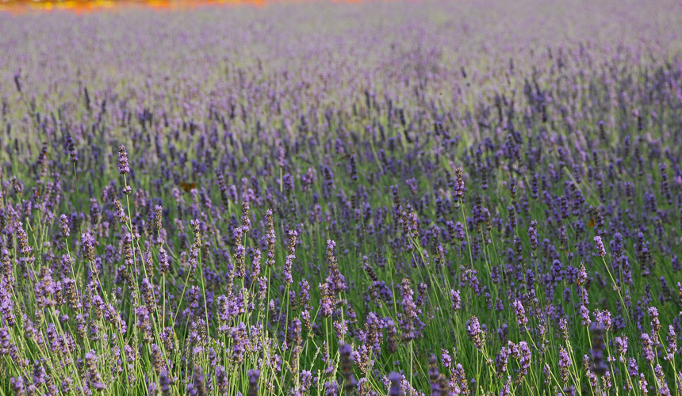

富良野 日之出公園

富良野的日之出公園，被選為「上富良野八景」，這裡是日本薰衣草的發祥地，順著山勢種植了廣大面積的薰衣草，一到夏天就形成一道道紫色波浪。除了薰衣草之外，地勢讓這裡可以一覽富良野山巒起伏的超廣角美景，天氣好時還可以看到遠處的十勝連峰，雖然大眾交通工具無法到達，但若是自駕行程千萬不要錯過這裡！
北海道夏天主役 薰衣草

說到北海道夏天的領銜主角，非是薰衣草莫屬了。以北海道中心的美瑛、富良野為首，北海道各地都可以看到飄著清香的淡紫色花田。逛花田的同時也不妨來支北海道最著名的薰衣草冰淇淋，紫色的冰淇淋有薰衣草的淡淡香味，讓人心神欲醉，快到北海道浪漫整個夏天吧！
位於富良野的富田農場可說是全日本最有名的薰衣草花園，除了薰衣草之外還有各色花海，在薰衣草季節來訪可以乘坐夏天限定的薰衣草小火車Norokko號，從富良野一路開到富田農場旁的「薰衣草花田站」，隨著大開的窗戶觀賞富良野美麗的田野風景，淡淡的花香和自然的清香隨著風吹來，可說是夏季專屬於北海道的風物詩。